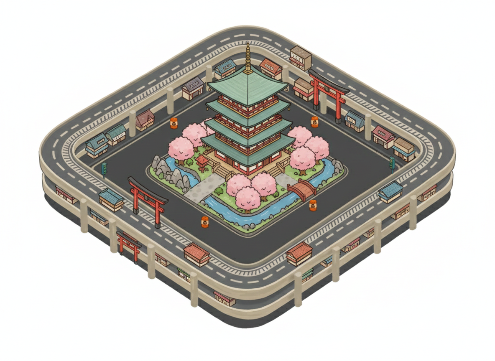
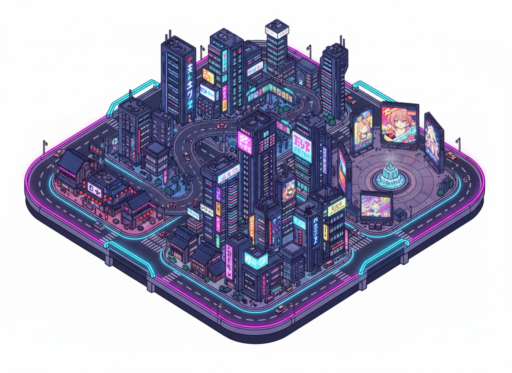
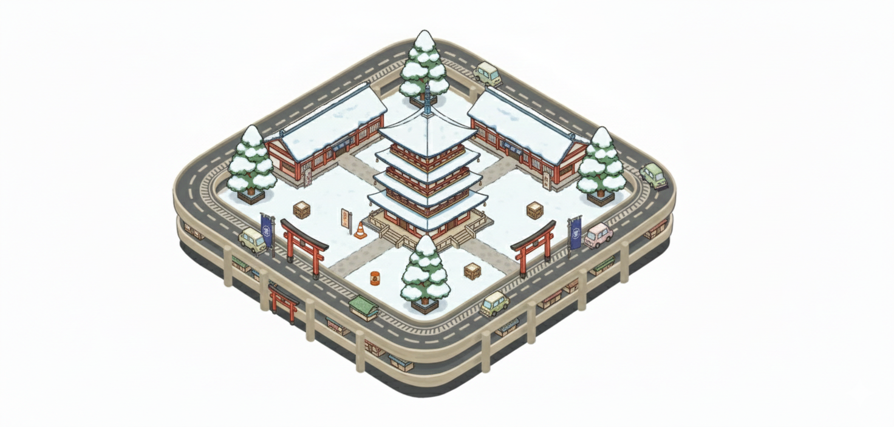
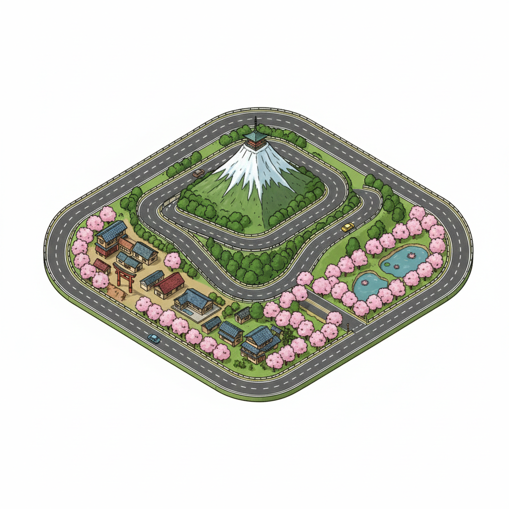
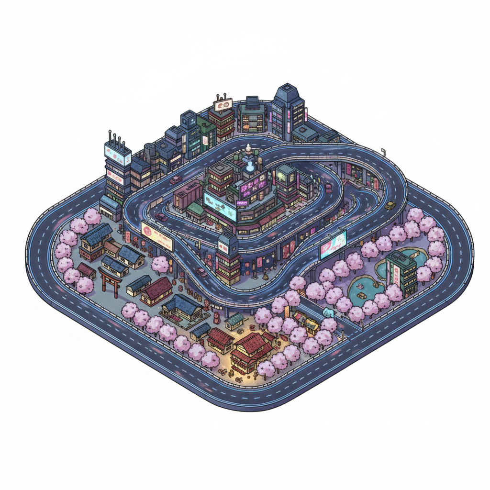
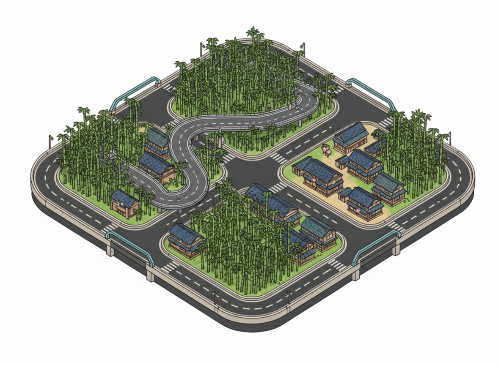

Elige el mapa
Haz click en una carta para seleccionar el mapa.

Daikoku

Circuito del Gran Buda (Nara)

Descenso de la Cumbre Blanca (Nagano)

Odisea de Neón (Shibuya/Tokio)

El Mercado del Caos (Osaka)

Arboleda de las Sombras (Bamboo Forest)